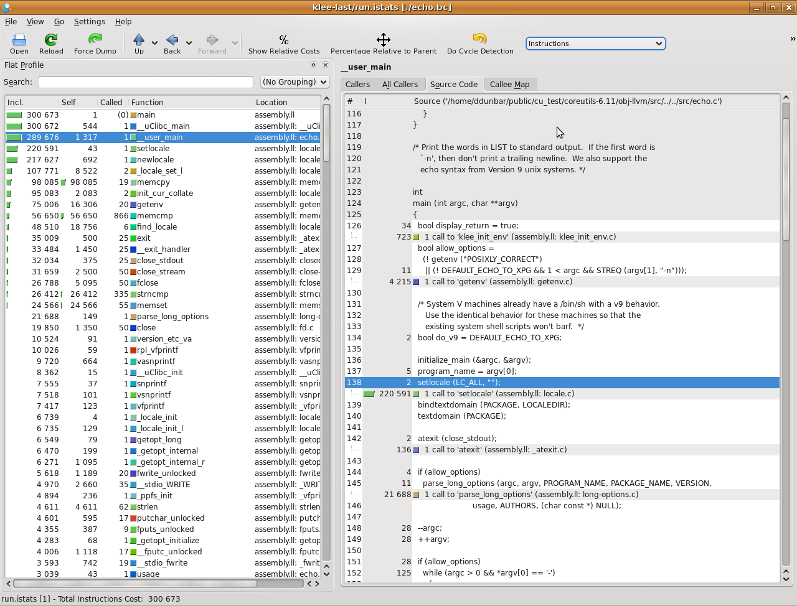
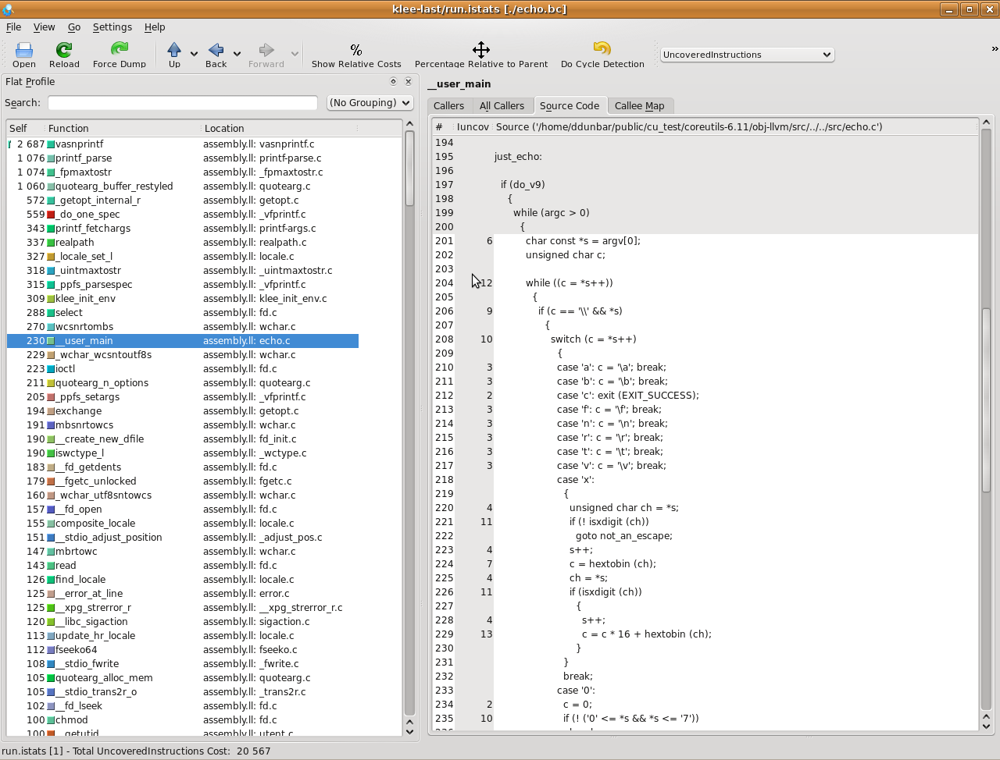

<!DOCTYPE HTML PUBLIC "-//W3C//DTD HTML 4.01//EN" 
          "http://www.w3.org/TR/html4/strict.dtd">
<!-- Material used from: HTML 4.01 specs: http://www.w3.org/TR/html401/ -->
<html>
<head>
  <META http-equiv="Content-Type" content="text/html; charset=ISO-8859-1">
  <title>KLEE - Coreutils Case Study</title>
  <link type="text/css" rel="stylesheet" href="menu.css">
  <link type="text/css" rel="stylesheet" href="content.css">
</head>
<body>
<!--#include virtual="menu.html.incl"-->
<div id="content">
  <!--*********************************************************************-->
  <h1>Coreutils Case Study</h1>

  <p>
    As a more detailed explanation of using KLEE, we will look at how we did our
    testing of <a href="http://www.gnu.org/software/coreutils/">GNU
    coreutils</a> using KLEE.
  </p>

  <p>
    These tests were done on a 32-bit Intel Linux machine, they aren't likely to
    work elsewhere. In addition, you will need to have configured and built KLEE
    with <tt>uclibc</tt> and <tt>POSIX</tt> runtime support.
  </p>

  <!--*********************************************************************-->
  
  <h2>Step 1: Build coreutils with gcov</h2>

  <p>
    First you will need to download and unpack the source
    for <a href="http://www.gnu.org/software/coreutils/">coreutils</a>. In this
    example we use version 6.11, which is what was used for our OSDI paper.
  </p>

  <p>
    Before we build with LLVM, let's build a version of <i>coreutils</i>
    with <em>gcov</em> suppory. We will use this later to get coverage
    information on the test cases produced by KLEE.
  </p>

  <p>
    From inside the <i>coreutils</i> directory, we'll do the usual
    configure/make steps inside a subdirectory (<tt>obj-gcov</tt>). Here are the
    steps:
  </p>

  <div class="instr">
    <pre>
<b>coreutils-6.11$ mkdir obj-gcov</b>
<b>coreutils-6.11$ cd obj-gcov</b>
<b>obj-gcov$ ../configure --disable-nls CFLAGS="-g -fprofile-arcs -ftest-coverage"</b>
<i>... verify that configure worked ...</i>
<b>obj-gcov$ make</b>
<i>... verify that make worked ...</i> </pre>
  </div>

  <p>
    We build with <tt>--disable-nls</tt> because this adds a lot of extra
    initialization in the C library which we were not interested in
    testing. Even though these aren't the executables that KLEE will be running
    on, we want to use the same compiler flags so that the test cases KLEE
    generates are most likely to work correctly when run on the uninstrumented
    binaries.
  </p>

  <p>
    You should now have a set of <tt>coreutils</tt> in
    the <tt>objc-gcov/src</tt> directory. For example:
  </p>

  <div class="instr">
    <pre>
<b>obj-gcov$ cd src</b>
src$ ls -l ls echo cat
-rwxr-xr-x 1 ddunbar ddunbar 164841 2009-07-25 20:58 cat
-rwxr-xr-x 1 ddunbar ddunbar 151051 2009-07-25 20:59 echo
-rwxr-xr-x 1 ddunbar ddunbar 439712 2009-07-25 20:58 ls
<b>src$ ./cat --version</b>
cat (GNU coreutils) 6.11
Copyright (C) 2008 Free Software Foundation, Inc.
License GPLv3+: GNU GPL version 3 or later <http://gnu.org/licenses/gpl.html>
This is free software: you are free to change and redistribute it.
There is NO WARRANTY, to the extent permitted by law.

Written by Torbjorn Granlund and Richard M. Stallman.</pre>
  </div>
 
  <!--*********************************************************************-->
  
  <h2>Step 2: Build <tt>coreutils</tt> with LLVM</h2>

  <p>
    One of the difficult parts of testing real software using KLEE is that it must
    be first compiled so that the final progress is an LLVM bitcode file and not a
    linked executable. The software's build system may be set up to use tools such
    as 'ar', 'libtool', and 'ld', which do not understand LLVM bitcode files.
  </p>
  
  <p>
    It depends on the actual project what the best way to do this is. For
    coreutils, we use a helper script <tt>klee-gcc</tt>, which acts
    like <tt>llvm-gcc</tt> but adds additional arguments to cause it to emit
    LLVM bitcode files, and to call <tt>llvm-ld</tt> to link executables. This
    is <b>not</b> a general solution, and your mileage may vary.
  </p>

    <!-- Discuss building other projects, the ./configure CC=llvm-gcc; make
    LD=llvm-ld CFLAGS="-emit-llvm" trick works frequently. -->

  <p>
    As before, we will build in a separate directory so we can easily access
    both the native executables, and the LLVM versions. Here are the steps:
  </p>

  <div class="instr">
    <pre>
<b>coreutils-6.11$ mkdir obj-llvm</b>
<b>coreutils-6.11$ cd obj-llvm</b>
<b>obj-llvm$ ../configure --disable-nls CFLAGS="-g"</b>
<i>... verify that configure worked ...</i>
<b>obj-llvm$ make CC=/full/path/to/klee/scripts/klee-gcc</b>
<i>... verify that make worked ...</i> </pre>
  </div>
  
  <p>
    Notice that we made two changes. First, we don't want to add <em>gcov</em>
    instrumentation in the binary we are going to test using KLEE, so we left of
    the <tt>-fprofile-arcs -ftest-coverage</tt> flags. Second, when running
    make, we set the <tt>CC</tt> variable to point to our <tt>klee-gcc</tt>
    wrapper script.
  </p>

  <p>
    If all went well, you should now how LLVM bitcode versions of coreutils! For
    example:
  </p>

  <div class="instr">
    <pre>
<b>obj-llvm$ cd src</b>
src$ ls -l ls echo cat
-rwxr-xr-x 1 ddunbar ddunbar 65 2009-07-25 23:40 cat
-rwxr-xr-x 1 ddunbar ddunbar 66 2009-07-25 23:43 echo
-rwxr-xr-x 1 ddunbar ddunbar 94 2009-07-25 23:38 ls
<b>src$ ./cat --version</b>
cat (GNU coreutils) 6.11
Copyright (C) 2008 Free Software Foundation, Inc.
License GPLv3+: GNU GPL version 3 or later <http://gnu.org/licenses/gpl.html>
This is free software: you are free to change and redistribute it.
There is NO WARRANTY, to the extent permitted by law.

LLVM ERROR: JIT does not support inline asm! </pre>
  </div>

  <p>
    You may notice some funny things going on. To start with, the files are way
    too small! Since we are actually producing LLVM bitcode files, the operating
    system can't run them directly. What <tt>llvm-ld</tt> does to make it so we
    can still run the resulting outputs is write a little shell script which
    just uses the LLVM interpreter to run the binaries, the actual LLVM bitcode
    files have <tt>.bc</tt> appended. For example:
  </p>

  <div class="instr">
    <pre>
<b>src$ cat ls</b>
#!/bin/sh
lli=${LLVMINTERP-lli}
exec $lli \
    -load=/usr/lib/librt.so \
    ls.bc ${1+"$@"}
<b>src$ ls -l ls.bc</b>
-rwxr-xr-x 1 ddunbar ddunbar 643640 2009-07-25 23:38 ls.bc </pre>
  </div>

  <p>
    The other funny thing is that the version message doesn't all print out, the
    LLVM interpreter emits a message about not supporting inline assembly. The
    problem here is that <tt>glibc</tt> occasionally implements certain
    operations using inline assembly, which <tt>lli</tt> doesn't
    understand. KLEE works around this problem by specifically turning certain
    inline assembly sequences back into the appropriate LLVM instructions before
    executing the binary.
  </p>

  <!--*********************************************************************-->
  
  <h2>Step 3: Using KLEE as an interpreter</h2>

  <p>
    At its core, KLEE is just an interpreter for LLVM bitcode. For example, here
    is how to run the same <tt>cat</tt> command we did before, using KLEE. Note,
    this step requires that you configured and built KLEE with <tt>uclibc</tt>
    and <tt>POSIX</tt> runtime support (if you didn't, you'll need to go do that
    now).
  </p>

  <div class="instr">
    <pre>
<b>src$ klee --libc=uclibc --posix-runtime ./cat.bc --version</b>
KLEE: NOTE: Using model: /home/ddunbar/public/klee/Release/lib/libkleeRuntimePOSIX.bca
KLEE: output directory = "klee-out-3"
KLEE: WARNING: undefined reference to function: __signbitl
KLEE: WARNING: executable has module level assembly (ignoring)
KLEE: WARNING: calling external: syscall(54, 0, 21505, 177325672)
KLEE: WARNING: calling __user_main with extra arguments.
KLEE: WARNING: calling external: getpagesize()
KLEE: WARNING: calling external: vprintf(177640072, 183340048)
cat (GNU coreutils) 6.11

License GPLv3+: GNU GPL version 3 or later <http://gnu.org/licenses/gpl.html>
This is free software: you are free to change and redistribute it.
There is NO WARRANTY, to the extent permitted by law.

Written by Torbjorn Granlund and Richard M. Stallman.
KLEE: WARNING: calling close_stdout with extra arguments.
Copyright (C) 2008 Free Software Foundation, Inc.
KLEE: done: total instructions = 259357
KLEE: done: completed paths = 1
KLEE: done: generated tests = 1
  </div>

  <p>
    We got a lot more output this time! Let's step through it, starting with the
    KLEE command itself. The general form of a KLEE command line is first the
    arguments for KLEE itself, then the LLVM bitcode file to execute
    (<tt>cat.bc</tt>), and then any arguments to pass to the application
    (<tt>--version</tt> in this case, as before).
  </p>
  
  <p>
    If we were running a normal native application, it would have been linked
    with the C library, but in this case KLEE is running the LLVM bitcode file
    directly. In order for KLEE to work effectively, it needs to have
    definitions for all the external functions the program may call. We have
    modified the <a href="http://www.uclibc.org">uClibc</a> C library
    implementation for use with KLEE; the <tt>--libc=uclibc</tt> KLEE argument
    tells KLEE to load that library and link it with the application before it
    starts execution.
  </p>

  <p>
    Similarly, a native application would be running on top of an operating
    system that provides lower level facilities like <tt>write()</tt>, which the
    C library uses in its implementation. As before, KLEE needs definitions for
    these functions in order to fully understand the program. We provide a POSIX
    runtime which is designed to work with KLEE and the uClibc library to
    provide the majority of operating system facilities used by command line
    applications -- the <tt>--posix-runtime</tt> argument tells KLEE to link
    this library in as well.
  </p>

  <p>
    As before, <tt>cat</tt> prints out its version information (note that this
    time all the text is written out), but we now have a number of additional
    information output by KLEE. In this case, most of these warnings are
    innocuous, but for completeness here is what they mean:
  </p>
  
  <ul>
    <li><i>undefined reference to function: __signbitl</i>: This warning means
      that the program contains a call to the function <tt>__signbitl</tt>,
      but that function isn't defined anywhere (we would have seen a lot more
      of these if we had not linked with uClibc and the POSIX runtime). If the
      program actually ends up making a call to this function while it is
      executing, KLEE won't be able to interpret it and may terminate the
      program.</li>
    
    <li><i>executable has module level assembly (ignoring)</i>: Some file
      compiled in to the application had file level inline-assembly, which KLEE
      can't understand. In this case this comes from uClibc and is unused, so
      this is safe.</li>
    
    <li><i>calling __user_main with extra arguments</i>: This indicates that
      the function was called with more arguments than it expected, it is
      almost always innocuous. In this case <tt>__user_main</tt> is actually
      the <tt>main()</tt> function for <tt>cat</tt>, which KLEE has renamed it
      when linking with uClibc. <tt>main()</tt> is being called with
      additional arguments by uClibc itself during startup, for example the
      environment pointer.</li>
    
    <li><i>calling external: getpagesize()</i>: This is an example of KLEE
      calling a function which is used in the program but is never
      defined. What KLEE actually does in such cases is try to call the native
      version of the function, if it exists. This is sometimes safe, as long
      as that function does write to any of the programs memory or attempt to
      manipulate symbolic values. <tt>getpagesize()</tt>, for example, just
      returns a constant.</li>
  </ul>

  <p>
    In general, KLEE will only emit a given warning once. The warnings are also
    logged to <tt>warnings.txt</tt> in the KLEE output directory.
  </p>

  <!--*********************************************************************-->
  
  <h2>Step 4: Introducing symbolic data to an application </h2>

  <p>
    We've seen that KLEE can interpret a program normally, but the real purpose
    of KLEE is to explore programs more exhaustively by making parts of their
    input symbolic. For example, lets look at running KLEE on the <tt>echo</tt>
    application.
  </p>
  
  <p>
    When using uClibc and the POSIX runtime, KLEE offers an additional
    argument <tt>--init-env</tt> which replaces the programs <tt>main()</tt>
    function with a special function (<tt>klee_init_env</tt>) provided inside
    the runtime library. This function alters the normal command line processing
    of the application, in particular to support construction of symbolic
    arguments. For example, passing <tt>--help</tt> yields:
  </p>

  <div class="instr">
    <pre>
<b>src$ klee --libc=uclibc --posix-runtime --init-env ./echo.bc --help</b>
<i>...</i>

usage: (klee_init_env) [options] [program arguments]
  -sym-arg <N>              - Replace by a symbolic argument with length N
  -sym-args <MIN> <MAX> <N> - Replace by at least MIN arguments and at most
                              MAX arguments, each with maximum length N
  -sym-files <NUM> <N>      - Make stdin and up to NUM symbolic files, each
                              with maximum size N.
  -sym-stdout               - Make stdout symbolic.
  -max-fail <N>             - Allow up to <N> injected failures
  -fd-fail                  - Shortcut for '-max-fail 1'
<i>...</i>
  </div>

  <p>
    As an example, lets run <tt>echo</tt> with a symbolic argument of 3
    characters.
  </p>

  <div class="instr">
    <pre>
<b>src$ klee --libc=uclibc --posix-runtime --init-env ./echo.bc --sym-arg 3</b>
KLEE: NOTE: Using model: /home/ddunbar/public/klee/Release/lib/libkleeRuntimePOSIX.bca
KLEE: output directory = "klee-out-16"
KLEE: WARNING: undefined reference to function: __signbitl
KLEE: WARNING: executable has module level assembly (ignoring)
KLEE: WARNING: calling external: syscall(54, 0, 21505, 189414856)
KLEE: WARNING: calling __user_main with extra arguments.
..
KLEE: WARNING: calling close_stdout with extra arguments.
...
KLEE: WARNING: calling external: printf(183664896, 183580400)
Usage: ./echo.bc [OPTION]... [STRING]...
Echo the STRING(s) to standard output.

  -n             do not output the trailing newline
  -e             enable interpretation of backslash escapes
  -E             disable interpretation of backslash escapes (default)
      --help     display this help and exit
      --version  output version information and exit

If -e is in effect, the following sequences are recognized:

  \0NNN   the character whose ASCII code is NNN (octal)
  \\     backslash
  \a     alert (BEL)
  \b     backspace
  \c     suppress trailing newline
  \f     form feed
  \n     new line
  \r     carriage return
  \t     horizontal tab
  \v     vertical tab

NOTE: your shell may have its own version of echo, which usually supersedes
the version described here.  Please refer to your shell's documentation
for details about the options it supports.

Report bugs to <bug-coreutils@gnu.org>.
KLEE: WARNING: calling external: vprintf(183956664, 190534360)
echo (GNU coreutils) 6.11

License GPLv3+: GNU GPL version 3 or later <http://gnu.org/licenses/gpl.html>
This is free software: you are free to change and redistribute it.
There is NO WARRANTY, to the extent permitted by law.

Written by FIXME unknown.
...
...
...


..


.

.
..
...
Copyright (C) 2008 Free Software Foundation, Inc.
KLEE: done: total instructions = 300193
KLEE: done: completed paths = 25
KLEE: done: generated tests = 25<pre>
  </div>

  <p>
    The results here are slightly more interesting, KLEE has explored 25 paths
    through the program. The output from all the paths is intermingled, but you
    can see that in addition to echoing various random characters, some blocks
    of text also were output. You may be suprised to learn that
    coreutils' <tt>echo</tt> takes some arguments, in this case the
    options <tt>--v</tt> (short for <tt>--version</tt>) and <tt>--h</tt> (short
    for <tt>--help</tt>) were explored. We can get a short summary of KLEE's
    internal statistics be running <tt>klee-stats</tt> on the output directory
    (remember, KLEE always makes a symlink called <tt>klee-last</tt> to the most
    recent output directory).
  </p>

  <div class="instr">
    <pre>
<b>src$ klee-stats klee-last</b>
-------------------------------------------------------------------------
| Path      | Instrs | Time(s) | ICov(%) | BCov(%) | ICount | Solver(%) |
-------------------------------------------------------------------------
| klee-last | 300673 |    1.47 |   28.18 |   17.37 |  28635 |      5.65 |
-------------------------------------------------------------------------</pre>
  </div>

  <p>
    Here <em>ICov</em> is the percentage of LLVM instructions which were
    covered, and <em>BCov</em> is the percentage of branches that were
    covered. You may be wondering why the percentages are so low -- how much
    more code can echo have! The first reason is that these numbers are computed
    using all the instructions or branches in the bitcode files; that includes a
    lot of library code which may not even be executable. We can help with that
    problem (and others) by passing the <tt>--optimize</tt> option to KLEE. This
    will cause KLEE to run the LLVM optimization passes on the bitcode module
    before executing it; in particular they will remove any dead code. When
    working with non-trivial applications, it is almost always a good idea to
    use this flag. Here are the results from running again
    with <tt>--optimze</tt> enabled:
  </p>

  <div class="instr">
    <pre>
<b>src$ klee --optimize --libc=uclibc --posix-runtime --init-env ./echo.bc --sym-arg 3</b>
<i>...</i>
KLEE: done: total instructions = 123251
KLEE: done: completed paths = 25
KLEE: done: generated tests = 25
src$ klee-stats klee-last
-------------------------------------------------------------------------
| Path      | Instrs | Time(s) | ICov(%) | BCov(%) | ICount | Solver(%) |
-------------------------------------------------------------------------
| klee-last | 123251 |    0.32 |   38.02 |   25.43 |   9531 |     29.66 |
-------------------------------------------------------------------------</pre>
  </div>

  <p>
    This time the instruction coverage went up by about ten percent, and you can
    see that KLEE also ran faster and executed less instructions. To understand
    why we still haven't gotten more coverage of the program, let's take a look
    at using kcachegrind to visualize the results of a KLEE run.
  </p>

  <!--*********************************************************************-->
  
  <h2>Step 5: Visualizing KLEE's progress with <tt>kcachegrind</tt> </h2>

  <p>
    <a href="http://kcachegrind.sourceforge.net">KCachegrind</a> is an excellent
    profiling visualization tool, originally written for use with the callgrind
    plugin for valgrind. If you don't have it already, it is usually easily
    available on a modern Linux distribution via your platforms usual software
    installation tool (e.g., <tt>apt-get</tt> or <tt>yum</tt>).
  </p>

  <p>
    KLEE by default writes out a <tt>run.istats</tt> file into the test output
    directory which is actually a kcachegrind file. In this example,
    the <tt>run.istats</tt> is from a run without <tt>--optimize</tt>, so the
    results are easier to understand. Assuming you have kcachegrind installed,
    just run:
  </p>

  <div class="instr">
    <pre> <b>src$ kcachegrind klee-last/run.istats</b> </pre>
  </div>

  <p>
    After KCachegrind opens, you should see a window that looks something like
    the one below. You should make sure that the "Instructions" statistic is
    selected by choosing "View" &gt; "Primary Event Type" &gt; "Instructions"
    from the menu, and make sure the "Source Code" view is selected (the right
    hand pane in the screenshot below).
  </p>
  
    <a href="content/coreutils_kc_0.png">
      </a>

  <p>
    KCachegrind is a complex application in itself, and interested users should
    see the KCachegrind website. However, the basics are that the one pane shows
    the "Flat Profile"; this is a list of which how many instructions were
    executed in each function. The "Self" column is the number of instructions
    which were executed in the function itself, and the "Incl" (inclusive)
    column is the number of instructions which were executed in the function, or
    any of the functions it called (and so on).
  </p>

  <p>
    KLEE includes quite a few statistics about execution. The one we are
    interested in now is "Uncovered Instructions", which will show which
    functions have instructions which were never executed. If you select that
    statistic and resort the list of functions, you should see something like
    this:
  </p>
  
    <a href="content/coreutils_kc_1.png">
      </a>

  <p>
    Notice that most of the uncovered instructions are in library code as we
    would expect. However, if we select the <tt>__user_main</tt> function, we
    can look for code inside <tt>echo</tt> itself that was uncovered. In this
    case, most of the uncovered instructions are inside a large <tt>if</tt>
    statement guarded by the variable <tt>do_v9</tt>. If you look a bit more,
    you can see that this is a flag set to true when <tt>-e</tt> is passed. The
    reason that KLEE never explored this code is because we only passed one
    symbolic argument -- hitting this code requires a command line like <tt>$
    echo -e \a</tt>.
  </p>

  <p>
    One subtle thing to understand if you are trying to actually make sense of
    the KCachegrind numbers is that they include events accumulated across all
    states. For example, consider the following code:
  </p>

  <div class="instr">
    <pre>
Line 1:      a = 1;
Line 2:      if (...)
Line 3:        printf("hello\n");
Line 4:      b = c; </pre>
  </div>

  <p>
    In a normal application, if the statement on Line 1 was only executed once,
    then the statement on Line 4 could be (at most) executed once. When KLEE is
    running an application, however, it could fork and generate separate
    processes at Line 2. In that case, Line 4 may be executed more times than
    Line 1!
  </p>

  <p>
    Another useful tidbit: KLEE actually writes the <tt>run.istats</tt> file
    periodically as the application is running. This provides one way to monitor
    the status of long running applications (another way is to use the
    klee-stats tool).
  </p>

  <!--*********************************************************************-->
  
  <h2>Step 6: Replaying KLEE generated test cases </h2>

  To be written.

  <!--*********************************************************************-->
  
  <h2>Step 7: Running KLEE on larger applications </h2>

  To be written.

</div>
</body>
</html>
